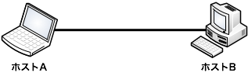
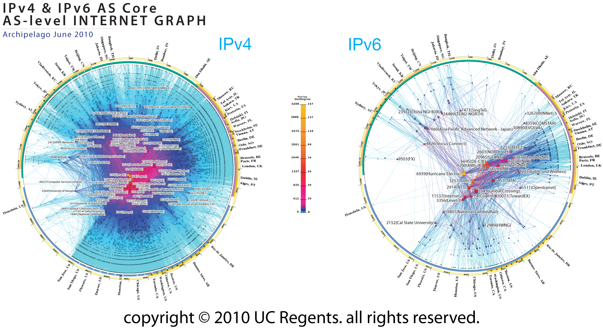
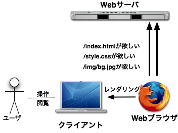
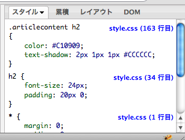

第一回：コンピュータネットワークとインターネット，Webページの仕組みを知る
初回となる第一回では，コンピュータネットワークとインターネットについての復習と，Webページの仕組みを知る為にちょっとしたWebページの編集を行います．
コンピュータネットワークの復習
第4回ではコンピュータ間の通信の仕組みについて学習した．同じプロトコルでコンピュータ同士が相互に通信できる仕組みをコンピュータネットワーク（Computer Network）と呼ぶ．コンピュータネットワーク上で，ネットワークに繋がったコンピュータの事をホスト（Host）と呼ぶ．

ネットワークの大きさ
コンピュータネットワークには大きさという概念がある．最も単純なコンピュータネットワークは2台のコンピュータ同士を直接ケーブルで繋いだネットワークである．
もう少し大きなネットワークとしては，授業で使う特別教室の様に，一台のハブ（Hub，2台以上のコンピュータを接続するための中継装置のような物）を使って構成されたネットワークがある．

さらにスケールを大きくして，SFCでCNSが提供するネットワークもコンピュータネットワークである．これまでケーブルで繋いだネットワークを主体に解説しているが，無線で繋がったネットワークも同様である．

ここまでに説明したネットワークのことを，一般にLAN（Local Area Network）と呼ぶ．LANは限定された範囲に限ったコンピュータネットワークで，物理的には同じ建物内や敷地内レベルの規模のものを指す．
一方，LANに対してWAN（Wide Area Network）がある．WANは長距離回線によって接続されたコンピュータネットワークを指す．例えば，大学の異なるキャンパス間を結んだネットワークはWANである．

インターネット
これまでに説明してきたネットワークは，大学や友達同士のようなごく私的なネットワークだが，WANを使ってさらにコンピュータネットワークのサイズを大きくしていくとどうなるだろうか？
SFCのネットワーク（CNS）
慶應のネットワーク（keio.ac.jpドメイン）

※：「慶應義塾大学におけるIT基盤環境の24時間運用」より（私情協力ジャーナル 2001 Vol.9 No.3）より
慶應・東大・東工大を接続したネットワーク（JUNET）

※：ITPro連載記事「前例なき挑戦，礎を築く！TCP/IPの助走期（1）」より
世界中のネットワークを繋げたもの（インターネット）
※：Caida（The Cooperative Association for Internet Data Analysis） 「IPv4 and IPv6 AS Core: Visualizing IPv4 and IPv6 Internet Topology at a Macroscopic Scale in 2010」より
このように，あらゆる組織・国を跨って繋がったネットワークがインターネット（Internet）である．
インターネットは異なる企業・政府機関・教育機関・国・個人などが相互に繋がることができる世界規模のネットワークで，IP（Internet Protocol）によって接続されている．IP以外にも，これまでに解説したDNS（Domain Name System）など，世界規模のネットワークを管理するためのシステムによって支えられている．
インターネットを支える技術やバックグラウンド等については，春学期の村井先生の講義「インターネット」が詳しいので，これ以上詳しい内容についてはそちらで学習することができる．当該講義はKEIO SFC on iTunes Uにてオンライン講義も公開されているので，そちらを参照するのも良い．
WWW - World Wide Web
WWW（World Wide Web，単にWebとも呼ばれる）はインターネット上でテキストや画像，動画などのデータを配信・受信するための仕組みである．サーバマシン上で動作するWebサーバ（Web server）アプリケーションに対して，クライアントPCのWebブラウザ（Web browser）が要求（Request）しにいくのが基本のモデルである．サーバとクライアントに役割分担してサービスを提供する方式を「クライアント・サーバ方式」または「サーバ・クライアント方式」と呼ぶ．
WebブラウザはWebとの通信を簡単にし，HTMLやJavaScriptといった言語を解析し，人間に見やすい形で表示する（レンダリング）機能を持つ．
- WebブラウザはWebサーバに対して/index.htmlファイルをリクエストする（HTTP Request）
- Webサーバはリクエストされた/index.htmlに相当するファイルを探し出す
- WebサーバはWebブラウザに対し，見つかった/index.htmlを返信する（HTTP Response）
- Webブラウザは取得したHTMLを解析し，人間に読みやすい形式で描画する（レンダリング）
URLの復習
URL（Uniform Resource Locator，昨今はURI（Uniform Resource Identifier）とも呼ばれる）はWebにおいて非常に重要な概念なので，改めて解説する．
URLはスキーム名（プロトコル），ホスト名，パス名で構成されており，それぞれが重要な役割を持っている

スキーム（プロトコル）
スキーム（プロトコル）は，どのようなプロトコルでデータを取得しにいくかを示す．Webで共通プロトコルとされるHTTPの場合は「http://」となる．また，SSL（Secure Socket Layer）による暗号化を行ったHTTPSの場合「https://」となる．
ホスト名
ホスト名は，インターネット上のどのホストに接続するのかを特定するのに使われる．
パス名
パス名は，ホスト上のどのファイルを取得するかを示す．パス名にはディレクトリ名を含むことができ，その場合は「/（スラッシュ）」区切りで記述する．昨今のWebサーバの慣例として，ディレクトリ名のみを指定した場合には自動的に「index.html」というファイルを取得する設定になっていることが多い．つまり「http://www.keio.ac.jp/」にアクセスすることは「http://www.keio.ac.jp/index.html」にアクセスするのと同じ意味になる．
また，ファイル以外にもプログラムをパス名として渡すこともでき「?引数名1=値1&引数名2=値2...」の形式で動的に動作を変えることができる（Webサーバの設定によって指定方法は異なる場合がある）．例として，Yahoo! Japanの検索エンジンは「http://search.yahoo.co.jp/search?q=[検索文字列]」をURLとしてリクエストすることで，検索結果を動的に変更している．
Webページの公開
CNSのサービスを使ってインターネットにWebページを公開する方法を解説する
CNSを通じたWebページの公開
CNSでは，ホームディレクトリに「public_html（半角英数小文字）」というディレクトリを作り，その下にファイルを配置することでweb.sfc.keio.ac.jpというWebサーバを通じてWebページをインターネット上に公開することができる．public_htmlディレクトリに置かれたファイルは「http://web.sfc.keio.ac.jp/~アカウント名/[public_htmlディレクトリを起点とした相対パス]」でアクセスすることができる．また，public_html以下にさらにディレクトリを配置した場合も「/（スラッシュ）」区切りでディレクトリ階層を指定することでアクセスすることができる．
特別教室のiMacからなら「CNS_HOMEDIR」の直下に「public_html」フォルダを配置すれば良い．例として，アカウント名「s12345ab」のユーザがpublic_htmlの下に置いた「test.txt」というファイルは「http://web.sfc.keio.ac.jp/~s12345ab/test.txt」というURLでアクセスすることができる．
演習
- 自分のホームディレクトリにpublic_htmlディレクトリを作成し，その下にtest.txtの名前で適当な文字列の書かれたテキストファイルを配置せよ．その上でhttp://から始まるURLで配置したファイルがアクセスできることを確認すること．
- 上記で作成したファイルを，自分のログインした端末以外からも確かにアクセスできることを確認せよ．
- http://web.sfc.keio.ac.jp/~morimori/resources/itb11.zipからダウンロードしたファイルの中身をpublic_html以下に解凍し「http://web.sfc.keio.ac.jp/~CNSアカウント名/」にアクセスせよ．
FireBugでリアルタイムに編集する
Firebugを使い，HTML/CSSの編集を体験してみる．
Firebugとは
Webブラウザ「Firefox」のプラグイン（後から追加できる拡張機能）で，WebページのCSS・HTML・Javascriptをリアルタイムに編集,
デバッグできるWeb開発者用のツール.Firefoxで以下のサイトにアクセスすればインストールすることができる．
https://addons.mozilla.org/ja/firefox/addon/firebug/
通常，Webページを編集する際は，HTMLやCSSファイルを編集し，保存してからブラウザで表示しなければならず，手間が大きい． しかし，Firebugを使うとブラウザでページを表示したまま，リアルタイムにHTMLやCSSを編集し，結果を見ることができる．
ただし，Firebugでリアルタイム編集した結果は保存されないため，編集結果を実際に反映させるためには元のファイルを修正する必要がある． FirebugにはWebブラウザの通信ログ機能，JavaScriptの高機能デバッグ機能など様々な機能があるが，授業では，主にHTMLとCSSのソース表示，スタイルとレイアウトの表示を使用する．

要素を選択する
ページの任意の場所で右クリックし，「要素を調査」というメニューを選択すると，左のウィンドウにクリックした場所のソースが反転表示される． ソースをクリックすると編集可能になり，編集するとリアルタイムにページの内容が変化するので，いろいろいじってみよう．

スタイルを編集する
右のウィンドウには，クリックした要素に設定されているスタイル（デザインに関する情報）が表示されている． スタイルには，font-sizeやcolorなどがあり，値を自由にいじってどのように変化するかを試してみよう．
レイアウトを編集する
右側のウィンドウを「レイアウト」タブに切り替えると，要素の大きさや余白に関する情報が表示される． ここの数値もいろいろといじってみて，どのように表示が変化するか試してみよう．

CSSスタイル属性の詳細については次回以降詳しく解説していくが，余力のある人は以下のサイトを参考に，スタイルシートに書かれている内容の意味を読み取ってみよう．